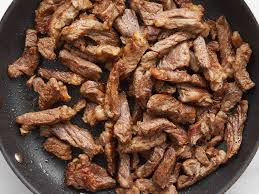
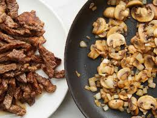
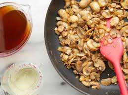
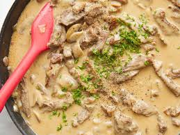
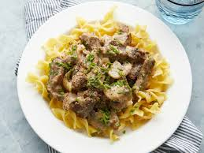

-Fragrant and tasty, easy to make recipe
-The whole family will love it
-This beef stroganoff provides a comforting, hearty family dinner.
-This recipe yields 8 servings
Season the beef generously with salt and pepper.
Step 2Heat the vegetable oil in a large skillet over high heat until near smoking. Stir in beef; cook, stirring constantly, for 6 to 7 minutes, until liquid evaporates and the meat browns.
 Step 3Remove the meat from the pan and set aside. Stir mushrooms, onions, and butter into the pan; cook and stir over medium heat until the vegetables are lightly browned.
 Step 4Add garlic and stir for 30 seconds. Stir in flour; cook for 1-2 minutes until incorporated. Stir in wine and 1 cup of broth, scraping the bottom of the pan to release any browned bits. Bring to a simmer and cook until the sauce thickens, about 3-4 minutes.
 Step 5Return beef to the pan. Stir in the remaining cup of broth; bring to a simmer and cook on low heat for about 1 hour, covered, until the beef is tender and the sauce is thick. Stir every 20 minutes.
Step 6Stir in creme fraiche. Stir in the chives. Season with salt and pepper to taste.
 Step 7Serve hot and enjoy!
 Dessert -> Home